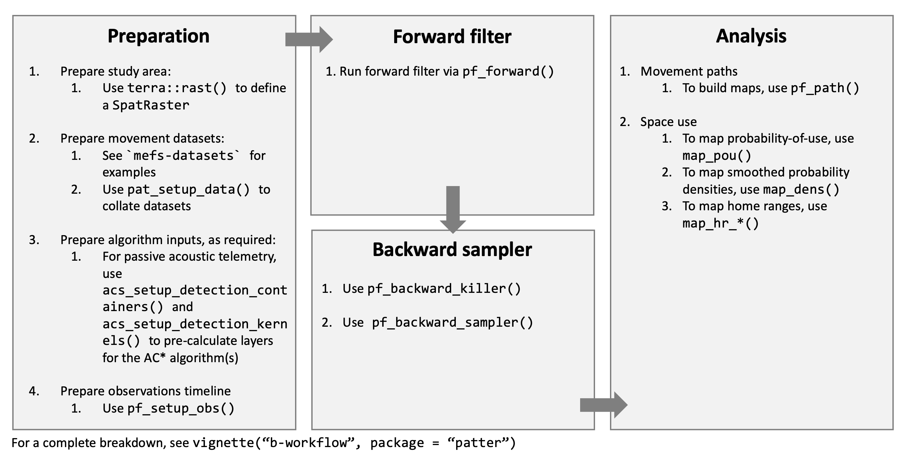
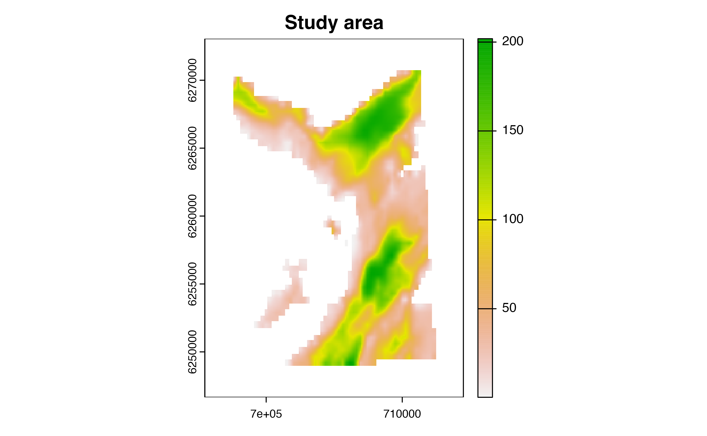
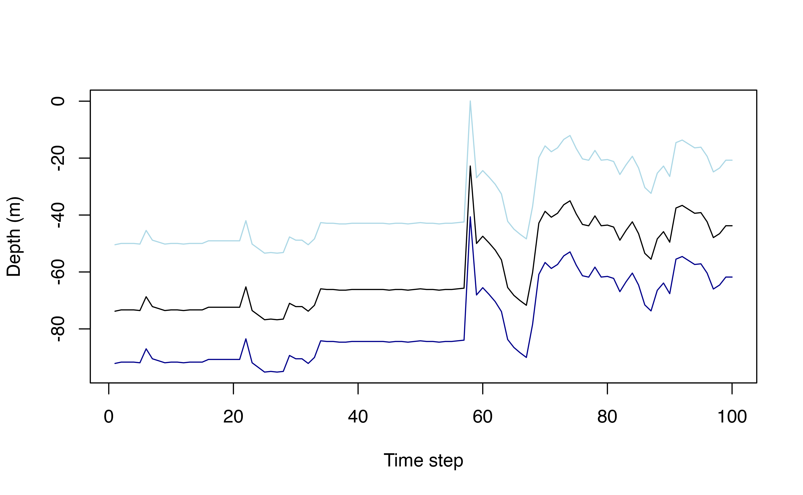
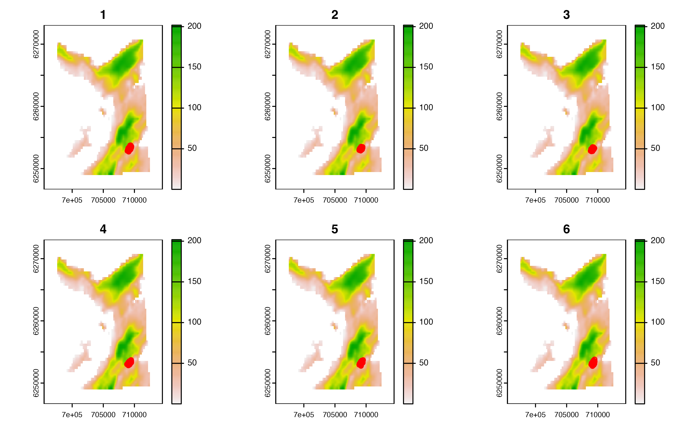
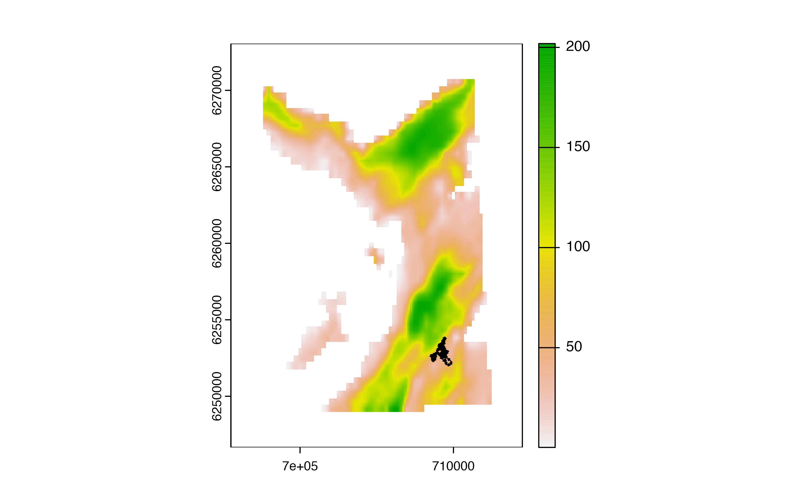
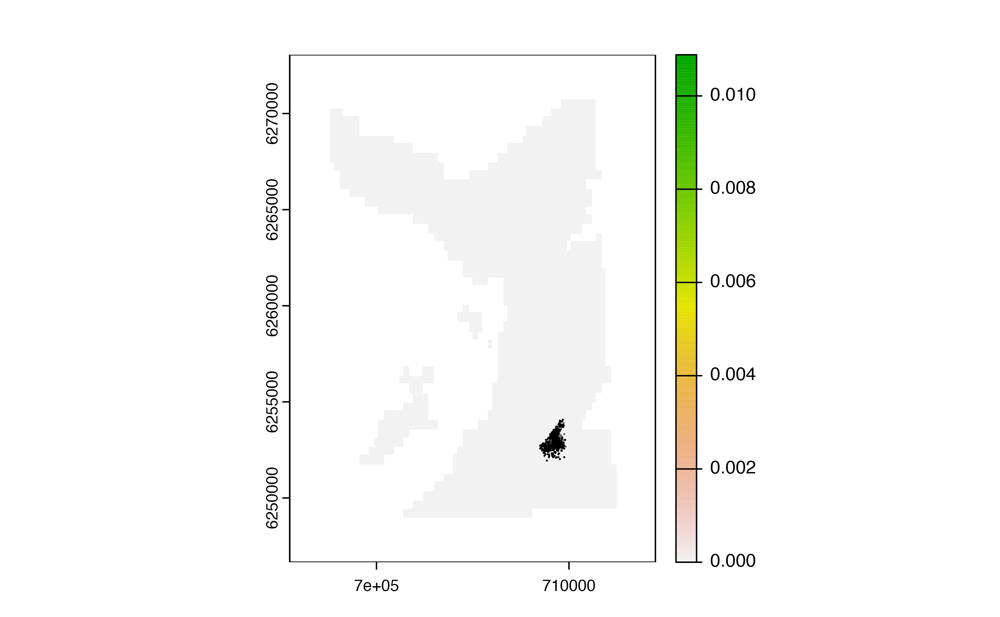

flapper algorithmsvignettes/c-workflow-example.Rmd
c-workflow-example.RmdThe patter package is a revised implementation of the
‘flapper’ algorithms for reconstructing movements and patterns of space
use for tagged animals in passive acoustic telemetry systems (Lavender
et al., 2023). For a introduction to the methodology, see the
methodology vignette (type
vignette("a-methodology", package = "patter")). This
vignette outlines the basic workflow via patter. Its
purpose is simply to illustrate how functions fit together. For full
details and additional functionality, see the package/function
documentation.
Figure 1. The
workflow for patter. This comprises four main
steps: data preparation, forward filtering, backward sampling and
analysis. In data preparation, we prepare the data for analysis and
pre-compute necessary algorithm inputs. In forward filtering, we
simulate possible locations of an individual, given the data and a
movement model, moving forwards in time. In backwards sampling, we
further refine the set of simulated locations. We can then analyse
reconstructed movement paths and patterns of space use.
The first step is to define a grid over the study area. Here, we use
an in-built bathymetry SpatRaster to represent the study
area, but any grid is acceptable. NA defines inhospitable
habitats (land in this case). Movements and likelihoods are represented
on the grid, so it is desirable to use a relatively fine resolution
where possible (especially since the speed of the forward simulation is
(largely) independent of grid resolution).
(gebco <- terra::disagg(dat_gebco(), 4))
#> class : SpatRaster
#> dimensions : 1056, 760, 1 (nrow, ncol, nlyr)
#> resolution : 25, 25 (x, y)
#> extent : 695492.1, 714492.1, 6246657, 6273057 (xmin, xmax, ymin, ymax)
#> coord. ref. : WGS 84 / UTM zone 29N (EPSG:32629)
#> source(s) : memory
#> varname : dat_gebco
#> name : layer
#> min value : 0.1994156
#> max value : 201.8856354
terra::plot(gebco, main = "Study area")
The next step is to prepare the movement datasets. In this vignette,
we use a small sample of acoustic and archival (depth) time series from
flapper skate (Dipturus intermedius) to reconstruct movement
paths and patterns of space use. However, these choices are not
mandatory and in fact you can include other datasets easily in existing
routines. See the sim_*() functions to simulate data
instead. For real-world analyses, start with a short (e.g., one day)
time series and a single individual to develop the workflow.
# Set seed
set.seed(1)
# Define a sample of acoustic time series
acc <- dat_acoustics[individual_id == 25, ]
head(acc)
#> individual_id timestamp receiver_id
#> 1: 25 2016-03-17 01:50:00 26
#> 2: 25 2016-03-17 01:52:00 26
#> 3: 25 2016-03-17 01:54:00 26
#> 4: 25 2016-03-17 01:58:00 26
#> 5: 25 2016-03-17 02:00:00 26
#> 6: 25 2016-03-17 02:04:00 26
# (optional) Define a sample of archival time series
arc <- dat_archival[individual_id == 25, ]
head(arc)
#> individual_id timestamp depth
#> 1: 25 2016-03-16 00:00:00 159.15
#> 2: 25 2016-03-16 00:02:00 161.01
#> 3: 25 2016-03-16 00:04:00 162.86
#> 4: 25 2016-03-16 00:06:00 164.48
#> 5: 25 2016-03-16 00:08:00 158.46
#> 6: 25 2016-03-16 00:10:00 155.45
# (optional) Align datasets for convenience
start <- max(c(min(acc$timestamp), min(arc$timestamp)))
end <- min(c(max(acc$timestamp), max(arc$timestamp)))
period <- lubridate::interval(start, end)
acc <- acc[timestamp %within% period, ]
arc <- arc[timestamp %within% period, ]
# Define passive acoustic telemetry receiver locations
# * (optional) For speed, we focus on relevant receivers
moorings <-
dat_moorings |>
mutate(int = lubridate::interval(receiver_start, receiver_end)) |>
filter(lubridate::int_overlaps(int, period)) |>
as.data.table()Use pat_setup_data() to collect data for
patter functions. This function is used to set up movement
datasets, spatial datasets and associated parameters for all patter
functions. It ensures that user inputs meet patter
requirements and streamlines the implementation of downstream
functions.
dlist <- pat_setup_data(.acoustics = acc,
.moorings = moorings,
.archival = arc,
.bathy = gebco,
.lonlat = FALSE)
#> `.moorings` coordinates coerced onto `.bathy` grid.To simplify the user-interface in patter, downstream patter often
expect this data list as the data (.dlist) argument and
extract the required elements. This also provides a flexible means to
extend existing functionality because you can include new elements in
dlist which are automatically available under-the-hood. We
will use this trick below to store additional layers for likelihood
functions.
patter reconstructs movement paths and patterns of space
use, accounting for observations (such as acoustic detections and
archival data) and movement (see the a-methodology
vignette). Observations are handled by likelihood functions and movement
is handled by a movement model. patter includes convenience
likelihood functions for acoustic and archival data. For ease of
computation, the acoustic likelihood function(s) require us to
pre-calculate the following objects:
We store them in dlist$algorithm, as required by the
relevant routines.
# Define detection overlaps from detection containers
dlist$algorithm$detection_overlaps <- acs_setup_detection_overlaps(dlist)
# Define detection kernels
# * For convenience, we simplify use the default detection probability model
# * But this should be adjusted as required for your study system;
dlist$algorithm$detection_kernels <-
acs_setup_detection_kernels(dlist,
.calc_detection_pr = acs_setup_detection_pr,
.verbose = FALSE)To implement the algorithms, we require a single time series, along
which observations are recorded. pf_setup_obs() is used for
this purpose. At the time of writing, this accepts acoustic and,
optionally, archival time series, in the format defined above. These
data are matched onto a single, regular time series, with a resolution
of .step units and additional columns are created as
required for the analysis.
obs <- pf_setup_obs(.dlist = dlist,
.step = "2 mins",
.mobility = 500,
.detection_range = moorings$receiver_range[1])
obs <- obs[1:100, ]
head(obs)
#> timestep timestamp date detection_id detection receiver_id
#> 1: 1 2016-03-17 01:50:00 2016-03-17 1 1 26
#> 2: 2 2016-03-17 01:52:00 2016-03-17 2 1 26
#> 3: 3 2016-03-17 01:54:00 2016-03-17 3 1 26
#> 4: 4 2016-03-17 01:56:00 2016-03-17 3 0
#> 5: 5 2016-03-17 01:58:00 2016-03-17 4 1 26
#> 6: 6 2016-03-17 02:00:00 2016-03-17 5 1 26
#> receiver_id_next mobility buffer_past buffer_future buffer_future_incl_gamma
#> 1: 26 500 500 500 1250
#> 2: 26 500 500 500 1250
#> 3: 26 500 500 1000 1750
#> 4: 26 500 500 500 1250
#> 5: 26 500 500 500 1250
#> 6: 26 500 500 1000 1750
#> depth
#> 1: 73.78
#> 2: 73.32
#> 3: 73.32
#> 4: 73.32
#> 5: 73.55
#> 6: 68.70To incorporate ancillary (e.g., archival) data, we may need to
include additional columns in obs as required by the
relevant likelihood functions. In our simulation, we’ll account for the
likelihood of depth observations using a binary likelihood function
provided by patter (pf_lik_dc()). Under this
model, depth observations in sampled locations where the bathymetric
depth likes between a lower and upper depth limit are equally likely,
whereas observations outside those limits are impossible (Lavender et
al., 2023). To implement this model, here we use a depth-error model to
define lower and upper depth limits. In this example, we have to include
a ‘fudge’ factor to account for the low resolution of the bathymetry
data.
# (A) Define a depth-error model
fudge <- 10
cde <- function(.depth) {
e <- 4.77 + 2.5 + sqrt(0.5^2 + (0.013 * .depth)^2) + fudge
matrix(c(-(e + 5), e), nrow = 2)
}
cde <- Vectorize(cde)
# (B) Pre-calculate depth limits for efficiency
obs <-
obs |>
mutate(
depth_shallow = depth + cde(depth)[1, ],
depth_deep = depth + cde(depth)[2, ]) |>
as.data.table()
# (C) Visualise depth-error model
p <- seq_len(nrow(obs))
plot(obs$timestep[p], obs$depth[p] * -1,
ylim = range(c(obs$depth_shallow[p], obs$depth_deep[p]) * -1),
xlab = "Time step", ylab = "Depth (m)",
type = "l")
lines(obs$timestep[p], obs$depth_shallow[p] * -1, col = "lightblue")
lines(obs$timestep[p], obs$depth_deep[p] * -1, col = "darkblue")
The forward simulation samples set of locations (termed particles) at
each time point, given the data up to (and including) that time point,
and a movement model. This is implemented via
pf_forward().
The main inputs to this function are: * The observations timeline; * A named list of datasets, as required to calculate likelihoods and simulate movement; * Two proposal functions (the movement model), used to generate proposal locations; * A named list of likelihood functions, used to evaluate the likelihood of the data given proposal locations; * A sampling function, used to (re)sample locations with replacement;
For brevity, here we use a template movement model specified by
pf_rpropose_kick() and in-built likelihood and sampling
functions.
# Implement ACDCPF algorithm
out_pff <- pf_forward(
# The timeline & supporting datasets
.obs = obs,
.dlist = dlist,
# The movement model (using default parameters designed for flapper skate)
.rpropose = pf_rpropose_kick,
.dpropose = pf_dpropose,
# ACDCPF likelihood components
.likelihood = list(acs_filter_land = acs_filter_land,
acs_filter_container = acs_filter_container,
pf_lik_ac = pf_lik_ac,
pf_lik_dc = pf_lik_dc),
# The sampler
.sample = pf_sample_multinomial,
# Other settings
.record = pf_opt_record(.save = TRUE),
.verbose = FALSE)Particle samples are stored in the history element of
the output. We can plot the first few samples as follows:
pp <- par(mfrow = c(2, 3))
lapply(1:6, \(i) {
terra::plot(gebco, main = obs$timestep[i])
xy <- terra::xyFromCell(gebco, out_pff$history[[i]]$cell_now)
points(xy, col = "red")
}) |> invisible()
par(pp)pf_backward_*() implements the backward pass.
out_pfb <- pf_backward_killer(.history = out_pff$history,
.record = pf_opt_record(.save = TRUE),
.verbose = FALSE)Particle samples can be used to reconstruct movement paths and build
utilisation distributions. To reconstruct movement paths, use
pf_path():
out_pfp <- pf_path(out_pfb$history,
.bathy = gebco,
.obs = obs,
.cols = "depth",
.verbose = FALSE)
head(out_pfp)
#> path_id timestep cell_id cell_x cell_y cell_z depth
#> 1: 1 1 604741 709004.6 6253169 83.21526 73.78
#> 2: 1 2 601707 709154.6 6253269 80.03239 73.32
#> 3: 1 3 597907 709154.6 6253394 87.54828 73.32
#> 4: 1 4 603231 709254.6 6253219 63.35369 73.32
#> 5: 1 5 596387 709154.6 6253444 87.54828 73.55
#> 6: 1 6 601712 709279.6 6253269 68.53316 68.70We can visualise an example path as follows:
terra::plot(gebco)
p1 <- out_pfp[out_pfp$path_id == 1, ]
s <- seq_len(nrow(p1))
arrows(x0 = p1$cell_x[s], x1 = p1$cell_x[s + 1],
y0 = p1$cell_y[s], y1 = p1$cell_y[s + 1],
length = 0.02)
To build a utilisation distribution, we simply sum (and renormalise)
the number of copies of each location, via map_pou():
# Map POU
coord <- pf_coord(.history = out_pfb$history, .bathy = gebco)
pou <- map_pou(.map = gebco, .coord = coord, .plot = TRUE)
#> `patter::map_pou()` called @ 2023-12-20 21:35:45...
#> ... Building XYM...
#> ... Building SpatRaster...
#> `patter::map_pou()` call ended @ 2023-12-20 21:35:46 (duration: ~1 sec(s)).
# Draw full range
map_hr_full(.map = pou, .add = TRUE, border = "dimgrey")
# Highlight home/core range via map_hr_home() or map_hr_core()
map_hr_home(.map = pou, .add = TRUE)
Lavender. E. et al. (2023). An integrative modelling framework for passive acoustic telemetry. Methods in Ecology and Evolution. https://doi.org/10.1111/2041-210X.14193.